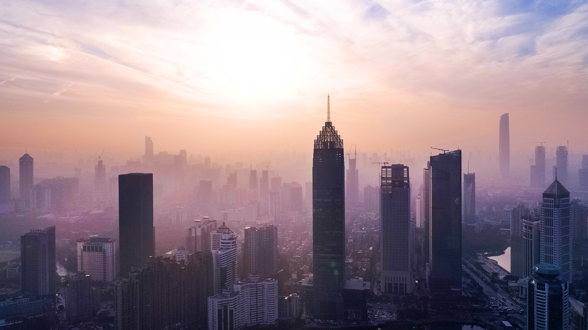

DESTINATION GUIDE

DESTINATION GUIDE
武汉由两江交汇、三镇相连，是中部地区重要的交通、科教与产业中心。“九省通衢”的格局延续至今，天河国际机场、高铁与长江航运共同支撑其面向全国的枢纽地位。
位于江汉平原东部，由武昌、汉口、汉阳三镇构成，是中部地区重要交通枢纽。
亚热带季风气候
四季分明、雨热同期，夏季炎热湿润，冬季偏冷，春秋两季气候相对宜人。
三镇沿江发展，汉口开埠后商贸兴盛；近现代交通、工业与教育不断塑造城市面貌。
长江文化与码头文化深植城市，近现代工业和高等教育传统亦赋予其开阔气质。
江河两岸跨区出行请预留时间；盛夏和冬季注意气温变化。